9
943 fiches en français pour le niveau 9, prêtes à imprimer et avec corrigé.
943 ressources
Thème
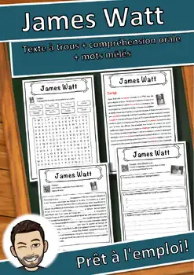
James Watt – Compréhension de lecture : texte à trous, écoute et mots mêlés
James Cook – Compréhension de lecture : texte à trous, écoute et mots mêlés
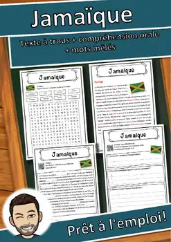
Jamaïque – Compréhension de lecture : texte à trous, écoute et mots mêlés
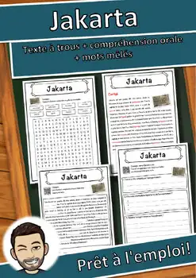
Jakarta – Compréhension de lecture : texte à trous, écoute et mots mêlés
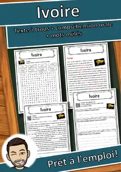
Ivoire – Compréhension de lecture : texte à trous, écoute et mots mêlés
Irlande – Compréhension de lecture : texte à trous, écoute et mots mêlés
Iridium – Compréhension de lecture : texte à trous, écoute et mots mêlés
Iode – Compréhension de lecture : texte à trous, écoute et mots mêlés
Italien – Compréhension de lecture : texte à trous, écoute et mots mêlés
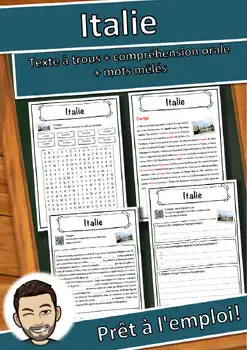
Italie – Compréhension de lecture : texte à trous, écoute et mots mêlés
Israël – Compréhension de lecture : texte à trous, écoute et mots mêlés
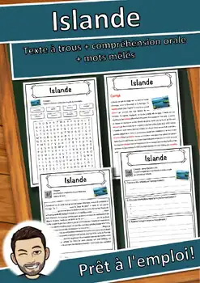
Islande – Compréhension de lecture : texte à trous, écoute et mots mêlés
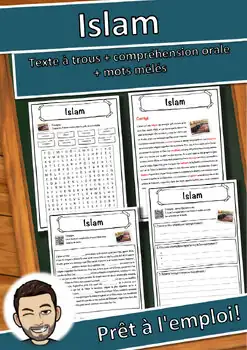
Islam – Compréhension de lecture : texte à trous, écoute et mots mêlés
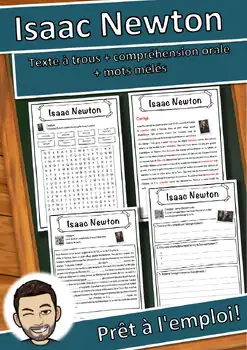
Isaac Newton – Compréhension de lecture : texte à trous, écoute et mots mêlés
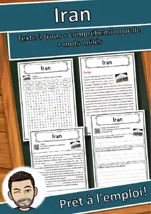
Iran – Compréhension de lecture : texte à trous, écoute et mots mêlés
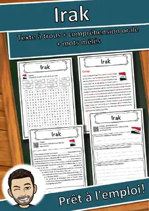
Irak – Compréhension de lecture : texte à trous, écoute et mots mêlés
Inventeur – Compréhension de lecture : texte à trous, écoute et mots mêlés
Invasions barbares – Texte à trous, compréhension orale et mots mêlés
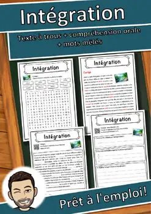
Intégration – Compréhension de lecture : texte à trous, écoute et mots mêlés
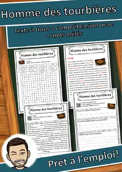
Homme des tourbières – Texte à trous, compréhension orale et mots mêlés
Homme de Néandertal – Texte à trous, compréhension orale et mots mêlés
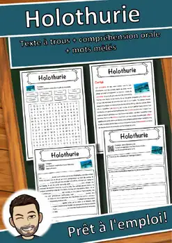
Holothurie – Compréhension de lecture : texte à trous, écoute et mots mêlés
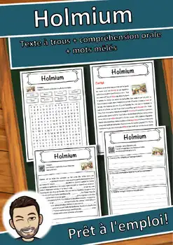
Holmium – Compréhension de lecture : texte à trous, écoute et mots mêlés
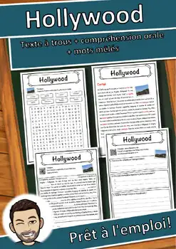
Hollywood – Compréhension de lecture : texte à trous, écoute et mots mêlés
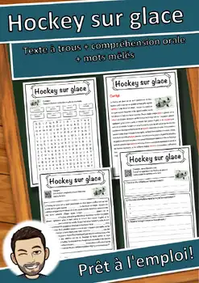
Hockey sur glace – Texte à trous, compréhension orale et mots mêlés
Hockey sur gazon – Texte à trous, compréhension orale et mots mêlés
Hobby – Compréhension de lecture : texte à trous, écoute et mots mêlés
Hiver – Compréhension de lecture : texte à trous, écoute et mots mêlés
Historien – Compréhension de lecture : texte à trous, écoute et mots mêlés
Histoires de Bas-de-Cuir – Texte à trous, compréhension orale et mots mêlés
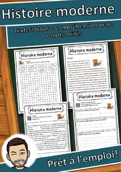
Histoire moderne – Texte à trous, compréhension orale et mots mêlés
Histoire – Compréhension de lecture : texte à trous, écoute et mots mêlés
Henri Rousseau – Compréhension de lecture : texte à trous, écoute et mots mêlés
Hirundinidae – Compréhension de lecture : texte à trous, écoute et mots mêlés
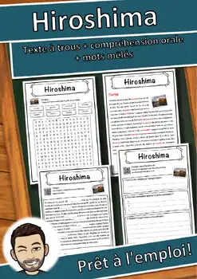
Hiroshima – Compréhension de lecture : texte à trous, écoute et mots mêlés
Hirondelle rustique – Texte à trous, compréhension orale et mots mêlés
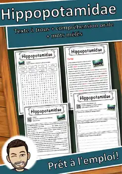
Hippopotamidae – Compréhension de lecture : texte à trous, écoute et mots mêlés
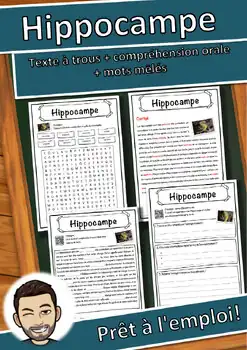
Hippocampe – Compréhension de lecture : texte à trous, écoute et mots mêlés
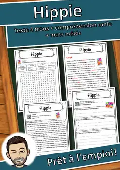
Hippie – Compréhension de lecture : texte à trous, écoute et mots mêlés
Hip-hop – Compréhension de lecture : texte à trous, écoute et mots mêlés
Hindouisme – Compréhension de lecture : texte à trous, écoute et mots mêlés
Hindi – Compréhension de lecture : texte à trous, écoute et mots mêlés
Himalaya – Compréhension de lecture : texte à trous, écoute et mots mêlés
Hildegarde de Bingen – Texte à trous, compréhension orale et mots mêlés
Heure d'été – Compréhension de lecture : texte à trous, écoute et mots mêlés
Hestia – Compréhension de lecture : texte à trous, écoute et mots mêlés
Hernán Cortés – Compréhension de lecture : texte à trous, écoute et mots mêlés
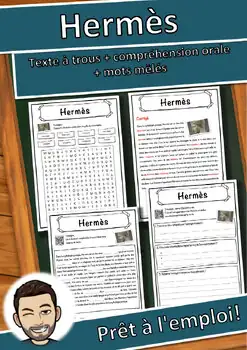
Hermès – Compréhension de lecture : texte à trous, écoute et mots mêlés
Aucune ressource trouvée – essaie un autre mot ou un autre filtre.